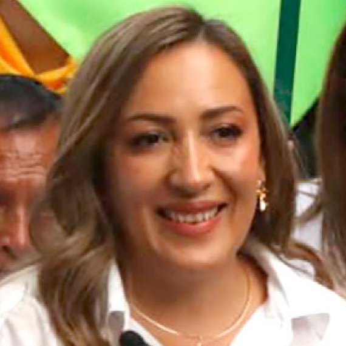

Acerca de la perspectiva política de Alejandra Abásolo:

La perspectiva política de Alejandra Abásolo se fundamenta en el trabajo territorial,
la participación ciudadana y la construcción de políticas públicas desde las comunidades,
con especial énfasis en la equidad social y el desarrollo regional.
Información sobre la perspectiva política de Alejandra Abásolo:
Participación ciudadana y comunitaria:
Promueve una democracia participativa, donde las comunidades rurales y urbanas
sean protagonistas en la toma de decisiones públicas.
Desarrollo territorial con enfoque social:
Prioriza políticas que reduzcan las brechas regionales y fortalezcan las economías locales.
Defensa del territorio y sostenibilidad:
Impulsa iniciativas que protejan el medio ambiente y los derechos de las comunidades.
Equidad de género y derechos sociales:
Trabaja por el reconocimiento y la garantía de los derechos de las mujeres y poblaciones históricamente excluidas.
Construcción de paz desde lo local:
Concibe la paz como un proceso social que se construye desde las comunidades y el diálogo ciudadano.
Orientación política:
Su orientación política se enmarca en un enfoque social y comunitario,
con apertura al diálogo entre distintos sectores políticos y sociales.
Alejandra Abásolo defiende una política ética, participativa y cercana al territorio,
orientada a la justicia social, la inclusión y el fortalecimiento de la democracia local y regional.